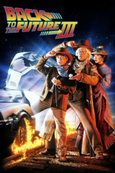

Country:United States, 119 minutes
Spoken languages:English
Genres:Adventure, Comedy, Sci-Fi
Director(s):Robert Zemeckis
Writer(s):Bob Gale
Video Codec:Unknown
Number: 1443

Certification:PG
Storyline:
The final installment finds Marty digging the trusty DeLorean out of a mineshaft and looking for Doc in the Wild West of 1885. But when their time machine breaks down, the travelers are stranded in a land of spurs. More problems arise when Doc falls for pretty schoolteacher Clara Clayton, and Marty tangles with Buford Tannen.
Cast:
Michael J. Fox (as Marty McFly / Seamus McFly), Christopher Lloyd (as Doctor Emmett Brown), Mary Steenburgen (as Clara Clayton), Thomas F. Wilson (as Buford 'Mad Dog' Tannen / Biff Tannen), Lea Thompson (as Maggie McFly / Lorraine McFly)
Medium: Media file,
Location: D:\Back To The Future\Back to The Future PArt 3.mp4
Loaned: No
Aspect ratio: Unknown